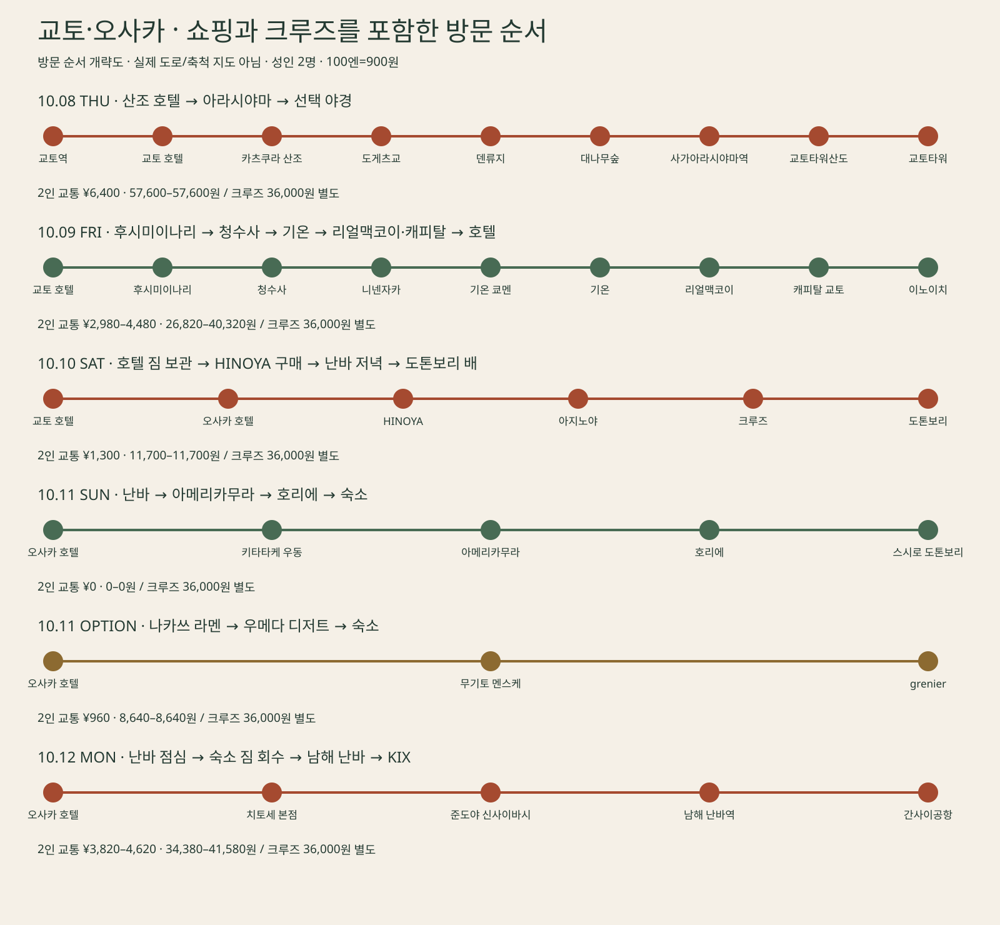

장소 위치를 보는 Google 지도입니다. 이동 경로는 아래 경로 지도와 구간별 길찾기에서 확인하세요. 일부 지명은 Google 제공 표기를 따릅니다.
오늘의 동선 지도

방문 순서
번호는 아래 장소 목록과 같습니다. 화살표는 방문 순서를 표시합니다. 지도: 일본 국토지리원
이동할 때마다, 얼마?
여행 전체 교통비 · 두 사람
식사·입장료·항공료·IC카드 보증금 제외. 택시는 차량 1대 예상액입니다. 원화는 실제 환율이 아닌 100엔=900원 예산 기준입니다. 오사카 짧은 지하철을 추가하면 두 사람 편도 ¥380씩 더하세요.